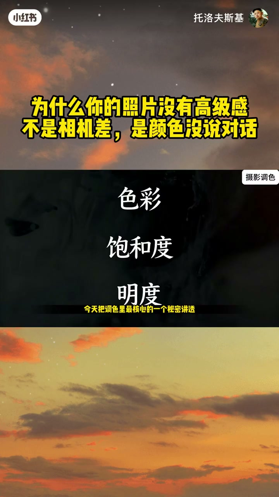
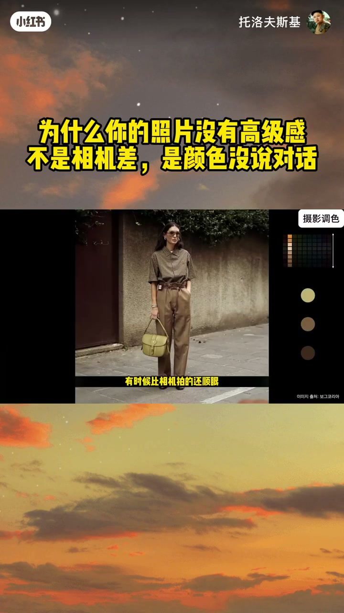
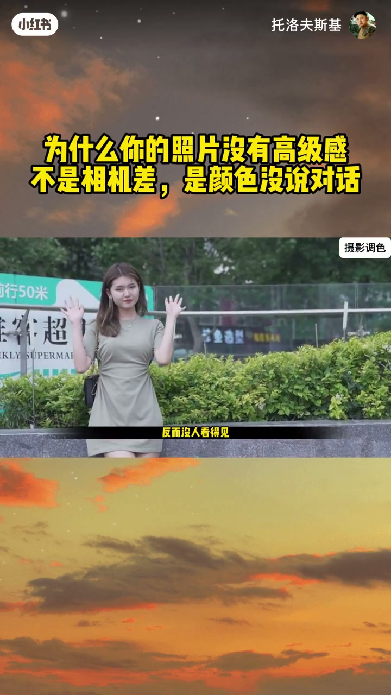
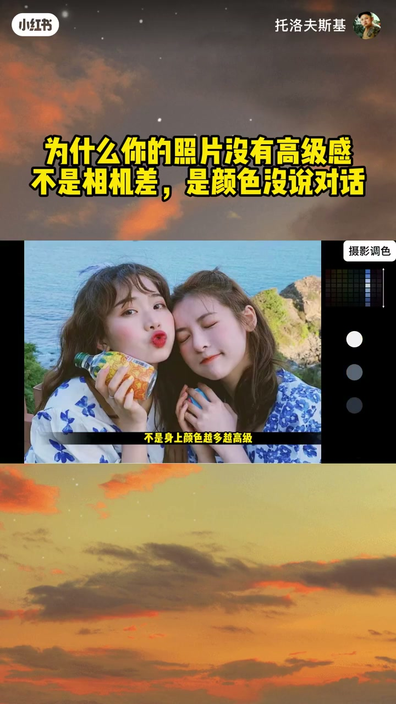
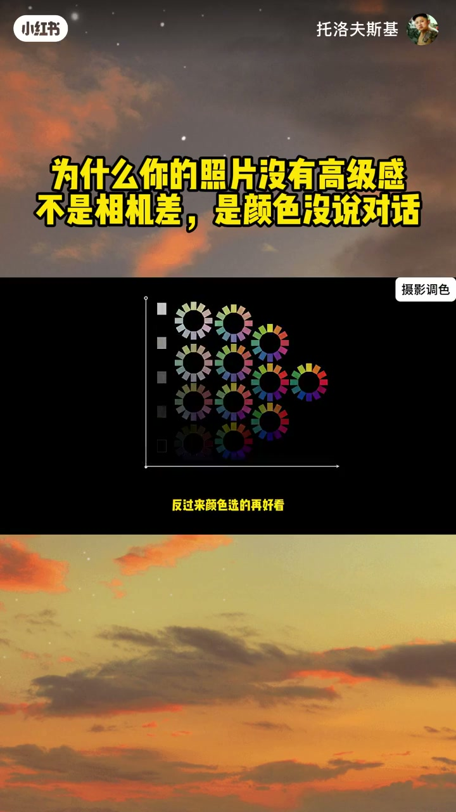
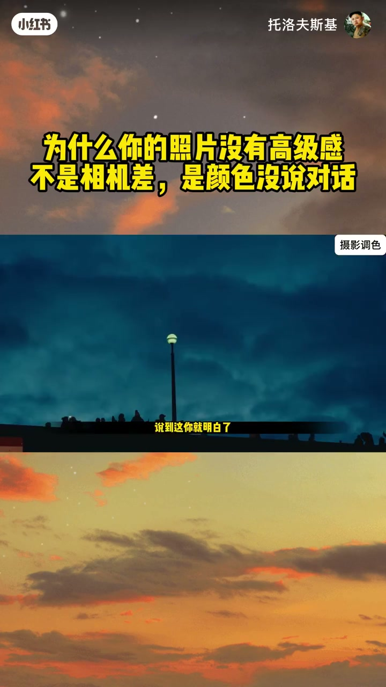
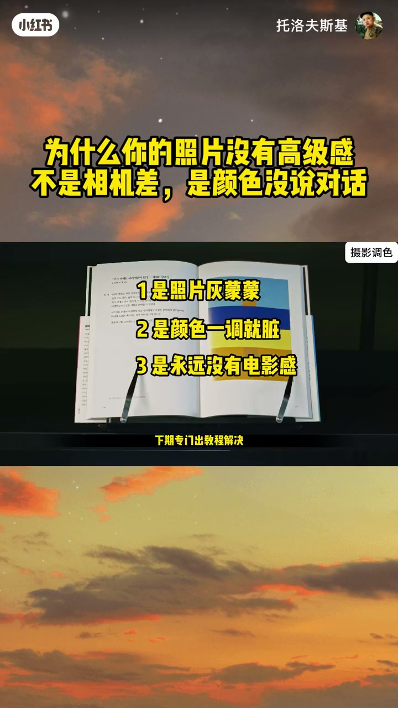

内容要点
「为什么你的照片没有高级感是颜色没说对话」教程要点：为什么同样一台相机 → 别人拍出来像电影海报 → 你拍出来却像朋友圈记录 → 很多人第一反应是；详见正文。
知识结构
为什么同样一台相机
是给颜色排好队
所有高级的配色
- 为什么同样一台相机
- 别人拍出来像电影海报
- 你拍出来却像朋友圈记录
- 很多人第一反应是
- 我镜头不够贵 设备不够好
为什么同样一台相机
00:00–01:25为什么同样一台相机
为什么同样一台相机；别人拍出来像电影海报；你拍出来却像朋友圈记录；很多人第一反应是；我镜头不够贵 设备不够好；但真正的问题可能根本不在器材；很多人照片不好看不是因为不会调色；而是一开始就调错了方向；今天把调色里最核心的一个秘密讲透；搞懂它；你调任何照片都能少走好几年环路；第一层真相；高级照片；先看黑白 不看颜色；教你个笨办法 现在就能验证；翻你相册；找一张你觉得好看的和一张普通的；全都转成黑白；你会发现好看的那张；哪怕没颜色；明暗层次依然舒服；普通的那张；黑白板一看乱成一团；你加再多好看的颜色；也只是给问题套了一层滤镜；本质的问题还在那里；很多人纳闷；为什么手机随手拍的照片；有时候比相机拍的还顺眼；不是手机更强；是手机算法提前帮你处理了；一部分明暗和色彩关系；你手动调色反而乱调；把骨架拆了；颜色再验也没用；记住；明暗是骨架；颜色只是衣服；骨架歪了；穿再好看的衣服也白搭；第二层真相；颜色越多；照片反而越廉价；大量游客照都有一个共同问题；不是拍得不好；是照片里每一个颜色都在喊；看我；红花喊；绿树喊；天空喊；连路边的广告牌都在抢袭；最后你真正想拍的人想拍的紧；反而没人看得见；调色不是给每个颜色都加满饱和度


01:25–02:54是给颜色排好队
是给颜色排好队；谁当主角谁当背景；分清楚；次要的元素；想办法降低它的存在感；可以降饱和；可以压亮度；也可以减对比；总之别让它抢戏；画面一干净；视线一聚焦；高级感立刻就出来了；第三层真相；这就是很多人研究几年调色；最后才发现的核心；高级感不是颜色多；是所有颜色说同一句话；说穿了就是四个字；色调同一；就像一个人穿衣服；不是身上颜色越多越高级；而是所有搭配互相配合；为什么同样拍一杯咖啡；有人拍出来像高端广告；有人拍出来就像随手拍；不是咖啡不一样；是广告里的颜色会主动让位；背景的桌面装饰不会抢戏；所有颜色都围绕咖啡；这一个主体服务；都在说同一句话；什么叫说同一句话；就是画面里所有颜色的明暗；鲜艳度；基本都在同一个层级里；哪怕用七八个不同的颜色；只要色调同一；放在一起就和谐；反过来；颜色选的再好看；明暗饱和度乱跳；凑在一起就是土；高手调色；先搭色调的骨架；再往里面填色相；新手刚好反过来；光调好看的颜色；骨架全是散的；这就是为什么有人随便调都好看；你精心选色还很土的根本原因；大师配色的目的只有一个；控制你的眼睛；很多人以为配色是为了好看；其实根本不是


02:52–04:23所有高级的配色
所有高级的配色；本质都是在引导观众的视线；为什么拍人像总喜欢暖皮肤；配冷背景；不是跟风；是背景负责制造氛围；人物负责吸引注意；冷暖一对比；人物自动就跳出来了；为什么拍安静的风景总用同类色；因为没有强烈的颜色冲突；观众的视线会慢慢沉下来；感受氛围；为什么很多电影喜欢用青橙色调；因为它能让环境和人物产生冷暖区别；背景扑氛围；人物抓眼球；重点颜色告诉你该看哪里；导演从来不会让所有颜色一起说话；永远有主次有秩序；这才是高级感的真正来源；不是颜色多；是颜色听话；说到这你就明白了；调色根本不是比谁会的参数多；懂得理论多；真正厉害的调色；不是往画面里加100种颜色；是你一眼就知道；这张照片该留下什么颜色；该删掉什么颜色；很多人觉得摄影升级是买更贵的镜头；更贵的相机；其实真正的升级；是你知道为什么要这么调；色彩理论永远是工具；不是加碎；评论区打数字就行；一是照片灰蒙蒙；二是颜色一调就脏；三是永远没有电影感；点赞最高的问题；下期专门出教程解决；下一期我直接拆电影感最大的骗局；为什么你套了电影LUT；照片还是一股廉价滤镜味；觉得有用的点个赞收藏；调色的时候拿出来对照着调；一遍就出效果；关注我；不教花里胡哨的参数；只教能直接出片的摄影思维



口述/画面要点（40段）
结合 Whisper medium 与画面大字整理；专有名词已校对。
为什么同样一台相机
别人拍出来像电影海报
你拍出来却像朋友圈记录
很多人第一反应是
我镜头不够贵 设备不够好
但真正的问题可能根本不在器材
很多人照片不好看不是因为不会调色
而是一开始就调错了方向
今天把调色里最核心的一个秘密讲透
搞懂它
你调任何照片都能少走好几年环路
第一层真相
高级照片
先看黑白 不看颜色
教你个笨办法 现在就能验证
翻你相册
找一张你觉得好看的和一张普通的
全都转成黑白
你会发现好看的那张
哪怕没颜色
明暗层次依然舒服
普通的那张
黑白板一看乱成一团
你加再多好看的颜色
也只是给问题套了一层滤镜
本质的问题还在那里
很多人纳闷
为什么手机随手拍的照片
有时候比相机拍的还顺眼
不是手机更强
是手机算法提前帮你处理了
一部分明暗和色彩关系
你手动调色反而乱调
把骨架拆了
颜色再验也没用
记住
明暗是骨架
颜色只是衣服
骨架歪了
穿再好看的衣服也白搭